材料
※粉量を変えると自動計算されます
生地
型
作り方
生地
STEP 1
仕込み水を作る
ボウルに卵、牛乳、水、砂糖、塩を入れ、全体を混ぜ合わせます。
ボウルに卵、牛乳、水、砂糖、塩を入れ、全体を混ぜ合わせます。
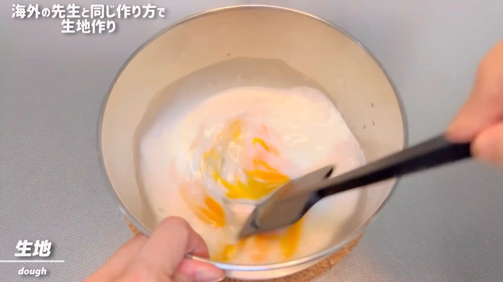
STEP 2
イーストを加えて混ぜる
ドライイーストを加え、しっかり混ぜ合わせます。
ドライイーストを加え、しっかり混ぜ合わせます。
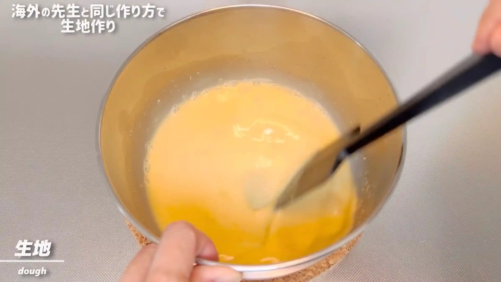
STEP 3
強力粉を3回に分けて加え、ヘラで混ぜる（[動画 00:28]）
強力粉を3回に分けて加え、その都度ヘラで混ぜ合わせます。生地がまとまってきたら、次の工程へ進みます。
強力粉を3回に分けて加え、その都度ヘラで混ぜ合わせます。生地がまとまってきたら、次の工程へ進みます。
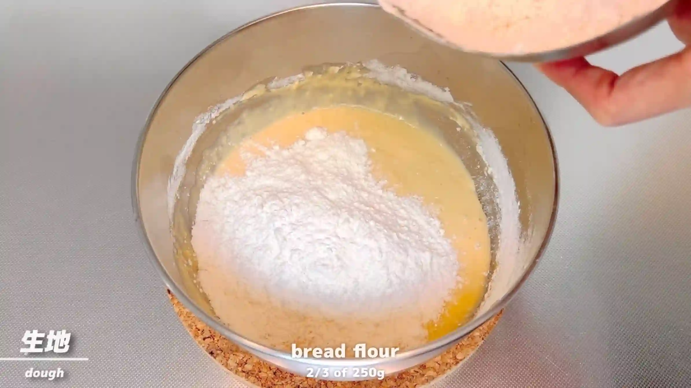
STEP 4
ボウルの中で10分捏ねる（[動画 00:55]）
生地を10分ほど捏ねます。台に出さず、ボウルの中だけで捏ねていきます。10分捏ねても表面がつるっとせず、かなりベタつきますが、このレシピではそのまま次の工程へ進みます。
生地を10分ほど捏ねます。台に出さず、ボウルの中だけで捏ねていきます。10分捏ねても表面がつるっとせず、かなりベタつきますが、このレシピではそのまま次の工程へ進みます。
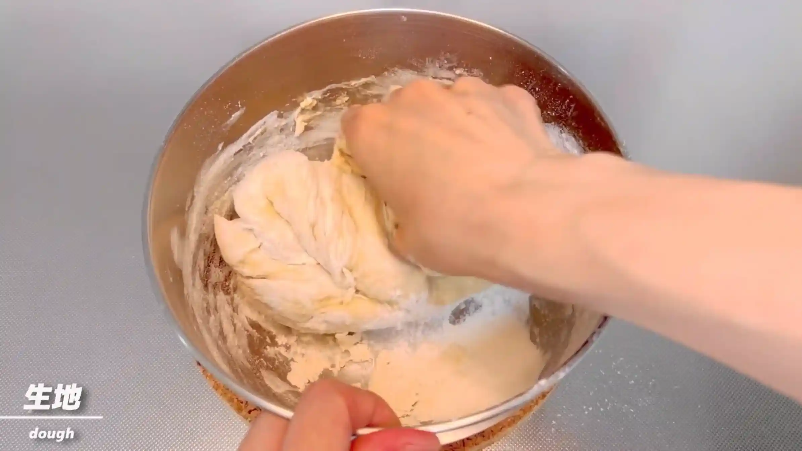
STEP 5
バターを加え、捏ねる（[動画 01:09]）
バターを加え、生地全体になじむまで捏ねます。生地がベタついていても、バターが全体になじんでまとまってきたらOKです。
バターを加え、生地全体になじむまで捏ねます。生地がベタついていても、バターが全体になじんでまとまってきたらOKです。
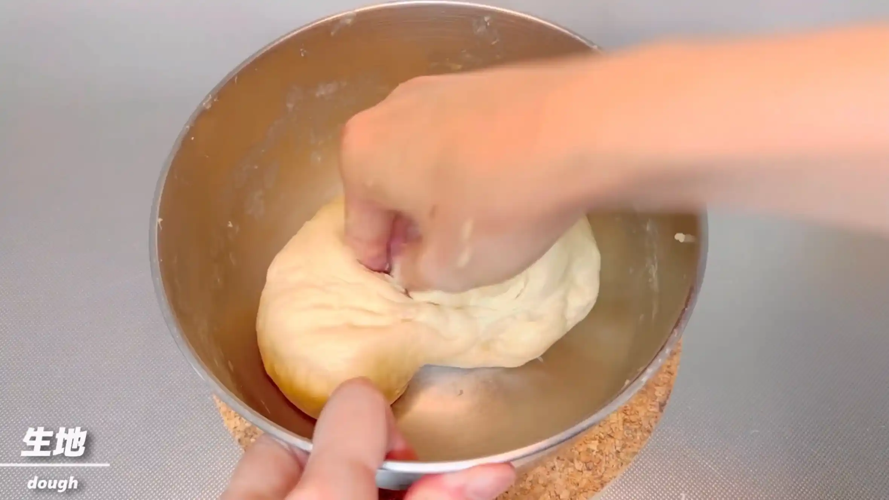
STEP 6
室温で20分おく
乾燥しないようにラップをして生地を休ませ、一次発酵させます。今回は発酵時間が20分と短めですが、次の分割・成形へ進みます。
乾燥しないようにラップをして生地を休ませ、一次発酵させます。今回は発酵時間が20分と短めですが、次の分割・成形へ進みます。
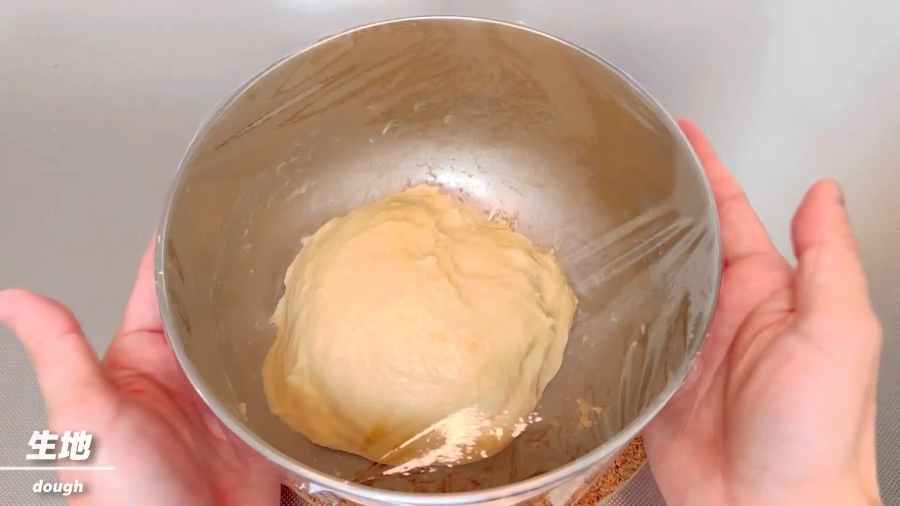
STEP 7
型にバターを塗る
型の内側にバターを塗っておきます。焼き上がったパンを型から取り出しやすくするため、全体に塗り広げます。
型の内側にバターを塗っておきます。焼き上がったパンを型から取り出しやすくするため、全体に塗り広げます。
STEP 8
生地を12分割して丸める
生地を作業台に取り出し、12等分して丸めます。かなりベタつく生地なので、生地同士がくっついて分割しにくい場合は、少し打ち粉をするのがおすすめです。
生地を作業台に取り出し、12等分して丸めます。かなりベタつく生地なので、生地同士がくっついて分割しにくい場合は、少し打ち粉をするのがおすすめです。
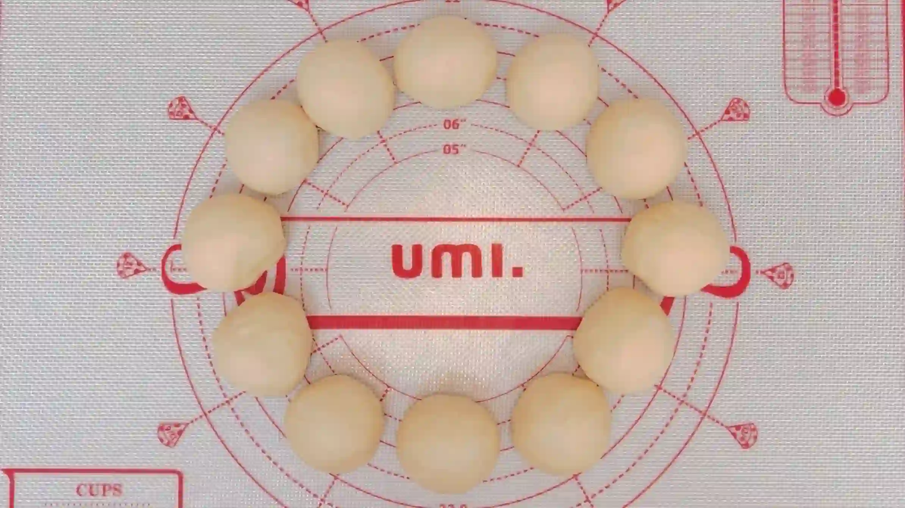
STEP 9
生地を6㎝ほどに広げる（[動画 02:33]）
丸めた生地を手で押し広げ、6㎝ほどの平らな円形にします。ここではきれいな形に整えるより、全体の大きさをそろえることを意識します。
丸めた生地を手で押し広げ、6㎝ほどの平らな円形にします。ここではきれいな形に整えるより、全体の大きさをそろえることを意識します。
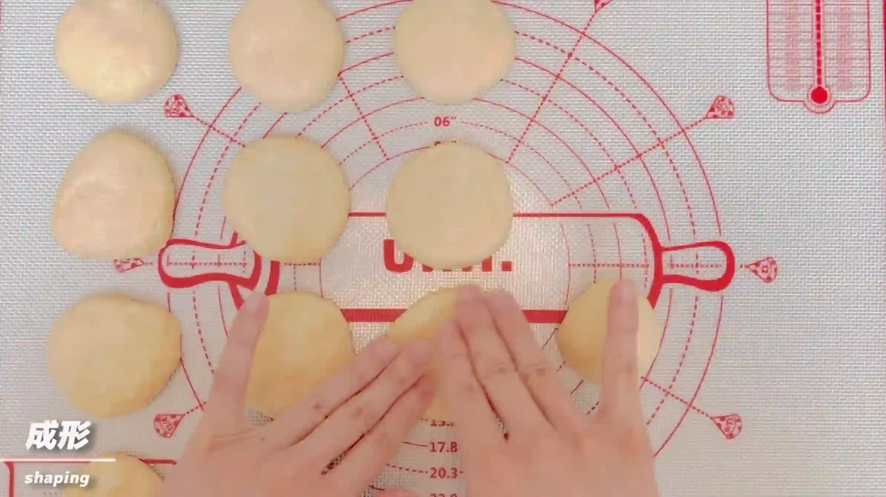
STEP 10
生地を型に並べる（[動画 03:37]）
平らにした生地を、型の縁に沿って重ねて並べていきます。こうすることで、焼いたときに生地が上へ膨らみ、もこもことした形に仕上がります。
平らにした生地を、型の縁に沿って重ねて並べていきます。こうすることで、焼いたときに生地が上へ膨らみ、もこもことした形に仕上がります。
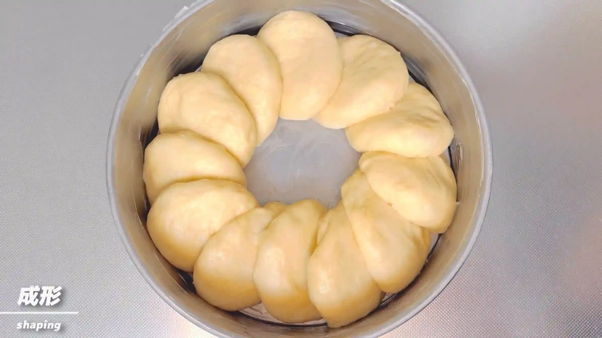
STEP 11
室温で30分おく
乾燥しないようにラップをして、成形した生地を二次発酵させます。30分を目安に、生地がふっくらと膨らんできたら次の工程へ進みます。また、この間にオーブンを予熱しておきます。
乾燥しないようにラップをして、成形した生地を二次発酵させます。30分を目安に、生地がふっくらと膨らんできたら次の工程へ進みます。また、この間にオーブンを予熱しておきます。
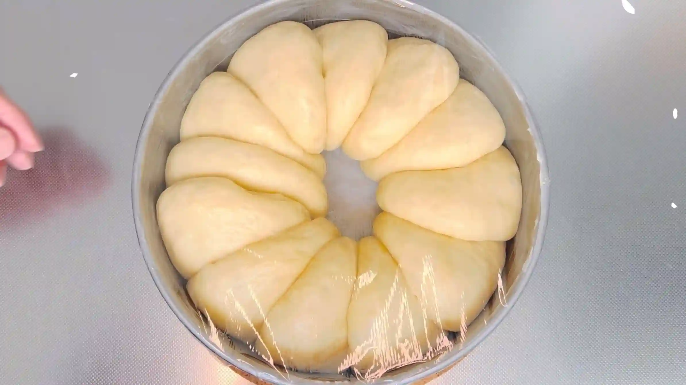
STEP 12
牛乳を塗る
焼成前に生地の表面へ牛乳を薄く塗ります。表面に焼き色がつきやすくなり、きれいな焼き上がりになります。
焼成前に生地の表面へ牛乳を薄く塗ります。表面に焼き色がつきやすくなり、きれいな焼き上がりになります。
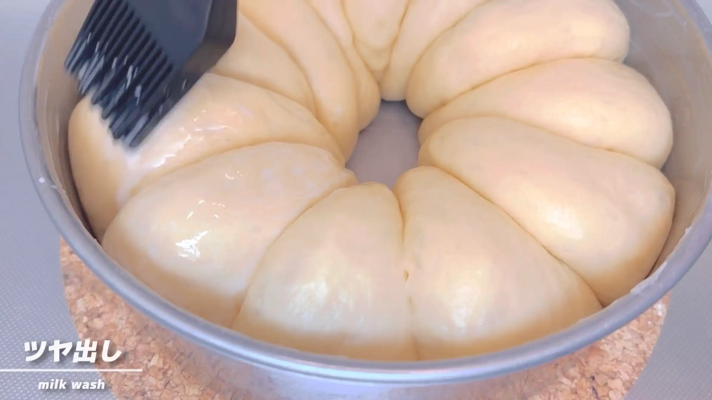
STEP 13
オーブン200℃で23分焼く
表面がきつね色になるまで焼きます。焼き色がついたら、焦げないようにアルミホイルをかぶせて焼き上げます。焼き時間は目安とし、ご家庭のオーブンに合わせて調整してください。
表面がきつね色になるまで焼きます。焼き色がついたら、焦げないようにアルミホイルをかぶせて焼き上げます。焼き時間は目安とし、ご家庭のオーブンに合わせて調整してください。
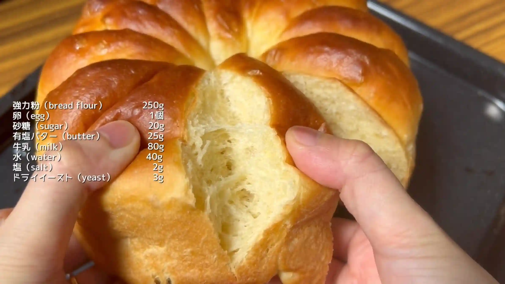
動画でチェック
おいしく作るためのワンポイントコラム
台に出さず、材料をボウルの中で10分捏ねる。一次発酵も、たった20分。海外ベーキングならではの、かなりワイルドな生地作りで『もこもこパン』を作ります。
平らに伸ばした生地を、型に重ねるように並べて焼く。ブラジルで大人気の、ユニークな形のパンです。実際に作ってみてわかった、2つのポイントをまとめました。
① 海外のワイルド生地作り
今回の生地作りは、台に出さず材料をボウルの中で10分捏ねるという手軽なスタイルです。一次発酵も20分と短く、かなりワイルド。ただ、「パン作りってなんだか難しそう…」という心理的ハードルをグッと下げてくれるのが海外ベーキングのとっても良いところですよね。実際作ってみると、10分捏ねても生地の表面がつるっとすることはなく、かなりベタつきがありました。また、分割時も生地がスケッパーにくっついてきたため、「もう少し発酵させた方が良いのでは？」という感じでした。やはり、小麦粉の質や気候の違いなど、「その土地にあった材料と作り方があるのだな」と思いつつ、ベタつく以外は特に難しい工程もなく、とっても楽しく生地作りができました。
② 楽しいもこもこ成形
分割した生地を丸めて並べるのではなく、平らに伸ばして、重ねながら並べていくのがとっても珍しいですよね！初めての成形で本当にうまく焼けるか不安でしたが、もこもこで本当に可愛い焼き上がりになりました！すごく簡単に楽しくできる成形なので、とてもおすすめです。
ワイルド生地はお味もワイルドかな、と思い食べてみると、本当にキメ細かいふわっふわの生地に焼き上がっていて、自分でもびっくりでした！生地のベタつき具合や、焼き上がりの質感など、もっと詳しくご覧になりたい方はぜひ動画をご参照ください。海外レシピを参考にすると、日本では見かけない作り方や成形などいろんな発見があって、とっても楽しいですね！
平らに伸ばした生地を、型に重ねるように並べて焼く。ブラジルで大人気の、ユニークな形のパンです。実際に作ってみてわかった、2つのポイントをまとめました。
① 海外のワイルド生地作り
今回の生地作りは、台に出さず材料をボウルの中で10分捏ねるという手軽なスタイルです。一次発酵も20分と短く、かなりワイルド。ただ、「パン作りってなんだか難しそう…」という心理的ハードルをグッと下げてくれるのが海外ベーキングのとっても良いところですよね。実際作ってみると、10分捏ねても生地の表面がつるっとすることはなく、かなりベタつきがありました。また、分割時も生地がスケッパーにくっついてきたため、「もう少し発酵させた方が良いのでは？」という感じでした。やはり、小麦粉の質や気候の違いなど、「その土地にあった材料と作り方があるのだな」と思いつつ、ベタつく以外は特に難しい工程もなく、とっても楽しく生地作りができました。
② 楽しいもこもこ成形
分割した生地を丸めて並べるのではなく、平らに伸ばして、重ねながら並べていくのがとっても珍しいですよね！初めての成形で本当にうまく焼けるか不安でしたが、もこもこで本当に可愛い焼き上がりになりました！すごく簡単に楽しくできる成形なので、とてもおすすめです。
ワイルド生地はお味もワイルドかな、と思い食べてみると、本当にキメ細かいふわっふわの生地に焼き上がっていて、自分でもびっくりでした！生地のベタつき具合や、焼き上がりの質感など、もっと詳しくご覧になりたい方はぜひ動画をご参照ください。海外レシピを参考にすると、日本では見かけない作り方や成形などいろんな発見があって、とっても楽しいですね！


今回は、SNSで見かけたブラジルで大人気の可愛いパン『もこもこパン』に挑戦していきます！型の中に平らな生地を並べて焼くだけで、むぎゅっと膨らんだちぎりパンになる楽しい海外レシピです。コラムでは、実際に作ってみてわかった2つのポイントをまとめました。